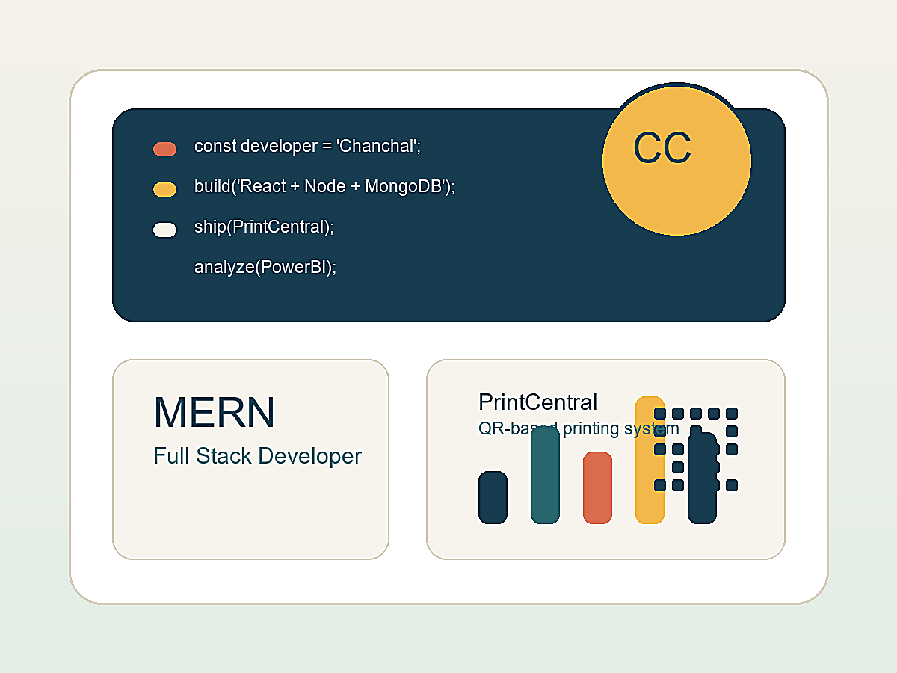

GET Candidate | Software Testing | QA | Front-End Development
Chanchal Chaudhary
MCA postgraduate with hands-on experience in Agile software delivery, manual functional testing, UI verification, REST API validation using Postman, front-end development, defect diagnosis, Java programming, MySQL database basics, and structured result reporting.

Recruiter Profile
Quality-focused software engineer ready for enterprise teams.
I am a Computer Applications postgraduate with strong academic performance and 6 months of hands-on experience in a production Agile software environment. I have verified UI features against requirements, validated REST API responses with Postman, documented defects, built responsive React.js components, and supported release stability for enterprise software.
Selected Work
Projects aligned with testing, development, and reporting.
Enterprise Platform | QA + Front-End
PrintCentral - QR-Based Batch Printing System
Contributed to responsive front-end features, functional verification, visual accuracy checks, REST API validation, defect diagnosis, and release support for an industrial batch content/printing platform adopted across 4 industrial use cases.
Java + MySQL | Academic Project
Banking Management System
Developed a banking-focused application concept using Java and MySQL fundamentals, covering customer records, account handling, transaction flow, database operations, and structured problem solving with object-oriented programming.
Data Analytics | Power BI
Mobile Usage Dashboard
Designed an interactive Power BI dashboard analyzing battery consumption, app usage, installed apps, screen time, devices, operating systems, and age groups using dynamic filters.
Full Stack Practice
Task Manager Web Application
Built a CRUD-based web application with responsive UI patterns, backend integration, and practical task workflow management.
ATS-Friendly Skills
Technical skills matched to GET, QA, and software roles.
Testing & QA
Manual Functional Testing, UI Verification, Defect Diagnosis, Defect Documentation, Test Result Reporting, Agile QA Practices
API Testing
REST API Testing, Postman, API Response Validation, Requirement Verification, Structured Reporting
Languages
JavaScript ES6+, Java, Python, C, C++, OOP Principles
Computer Science
Data Structures and Algorithms, Problem Solving, Logical Reasoning, Object-Oriented Programming
Frontend
React.js, Next.js, HTML5, CSS3, SCSS, Ant Design, Responsive Design, Component-Based UI Architecture
Engineering Tools
Git, GitHub, Branching, Pull Requests, Code Review, VS Code, Agile Sprint Workflow, Documentation
Database
MySQL, SQL, MongoDB, Relational Database Basics, Database Design Basics, Query Writing, Data Management
AI Productivity
Prompt Engineering, ChatGPT & AI Tools, AI-Assisted Development, Research, Debugging, Documentation, Faster Prototyping
Data & Reporting
Power BI, MS Excel, PowerPoint, KPI Dashboards, Data Visualization, Reporting Views
Recruiter Summary
Keywords hiring teams can quickly identify.
Graduate Engineer Trainee
Software Testing
Quality Assurance
Manual Testing
Functional Testing
UI Verification
Defect Diagnosis
Bug Documentation
REST API Testing
Postman
Agile
React.js
Next.js
JavaScript
Java
MySQL
SQL
Database Management
Banking Management System
DSA
GitHub
Power BI
Experience & Education
Experience built in production software environments.
Full Stack Web Development Intern - Control Print Limited
Verified functional and visual accuracy of React.js UI components, validated REST API responses using Postman, diagnosed and documented defects, built responsive production-ready UI features, used Git/GitHub workflows, and collaborated with developers, testers, clients, and senior engineers in Agile sprints.
Master of Computer Applications - Himachal Pradesh University
Completed MCA with 81%.
Bachelor of Computer Applications
Completed BCA with 88.2%.
Certifications
Certifications that support modern software delivery.
AI Tools Certification
ChatGPT & AI Tools
Strengthened my ability to use AI tools for faster learning, code assistance, idea generation, debugging support, and productivity in modern software development workflows.
Prompt Engineering
Prompt Engineering Certificate
Learned how to write clear, structured prompts for better AI responses, technical problem solving, documentation, research, and building more effective AI-assisted solutions.
Data Analytics
Advanced Data Analytics
Training across Power BI, MS Excel, PowerPoint, dashboards, data visualization, reporting, and insight presentation.
Modern Developer Mindset
AI-Assisted Development
I use AI responsibly as a productivity partner while keeping ownership of logic, quality, testing, and final implementation.
Contact
Open to Graduate Engineer Trainee and software roles.
Available for Graduate Engineer Trainee, Software Testing, Quality Assurance, Front-End Development, REST API Testing, and web application roles where discipline, documentation, and quality matter.